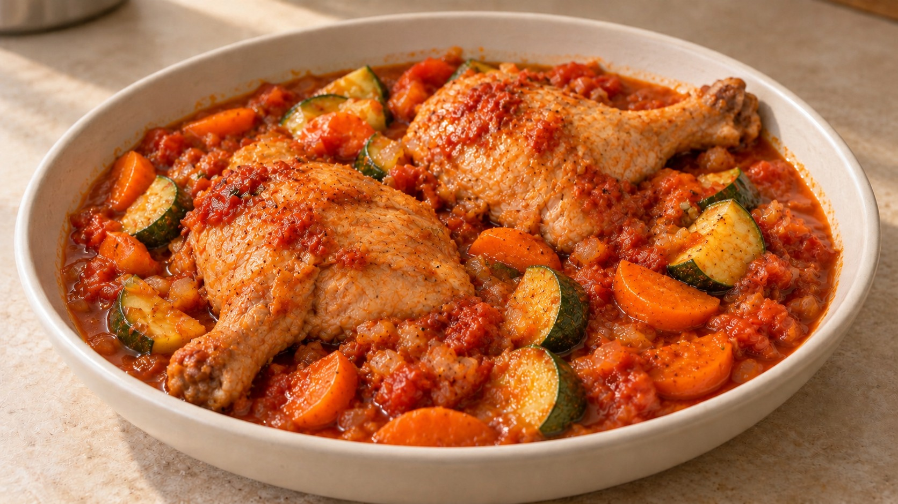

Pollo guisado con calabacín en cocotte

Más de Guisos y asadosPDF para imprimir
Ingredientes
- 4 contramuslos o 2 cuartos traseros, con hueso y sin piel (800 g–1 kg aprox.)
- 1 cebolla mediana (150 g)
- 2 zanahorias medianas (150 g)
- 1 calabacín mediano (250 g)
- 300 g de tomate triturado
- 2 dientes de ajo
- 50–75 ml de vino blanco seco
- 2 cucharadas de aceite de oliva (30 ml)
- 75–150 ml de agua o caldo de pollo
- ½ cucharadita de pimentón dulce
- 1 hoja de laurel; tomillo opcional
- Sal y pimienta negra
Preparación
Pica la cebolla y el ajo y corta la zanahoria en medias lunas de 4–5 mm. Seca y salpimienta el pollo. Si usas cuartos traseros y no caben holgados, separa muslo y contramuslo por la articulación, sin trocear la carne. Calienta progresivamente la cocotte con una cucharada de aceite a fuego medio. Dora el pollo, por tandas si hace falta, unos 4–5 minutos por cada cara; debe coger color sin quemar el fondo. Retira a un plato con sus jugos.
Corta el calabacín en medias lunas de unos 2 cm. Si el fondo sigue marrón y no amenaza con quemarse, saltéalo brevemente a fuego medio, hasta que tome algo de color sin ablandarse. Reserva. Si el fondo se oscurece demasiado, omite el salteado y desglasa enseguida; en ese caso, añade el calabacín al horno algo antes y comprueba su punto.
Baja el fuego y aparta un momento la cocotte si está demasiado caliente: el hierro tarda en perder calor. Vierte el vino, despega los restos dorados con una espátula de madera y reduce aproximadamente a la mitad. No aproveches restos negros ni con olor a quemado.
Añade la cebolla, la zanahoria, una pizca de sal y la cucharada de aceite restante. Cocina a fuego medio-bajo, removiendo, hasta que la cebolla esté blanda; incorpora el ajo durante el último minuto. Si se agarra, añade una cucharada de agua. Mientras tanto, precalienta el horno a 175 °C, calor arriba y abajo, o 160 °C con ventilador.
Incorpora el pimentón, remueve unos 10 segundos y añade enseguida el tomate, el laurel y el tomillo si lo usas. Cocina destapado a fuego medio-bajo hasta que el tomate espese y pierda el sabor a crudo.
Devuelve el pollo y sus jugos, en una capa, y añade 75 ml de agua o caldo caliente; usa algo más solo si la salsa está muy espesa, sin cubrir las piezas por completo. Lleva a un hervor suave, tapa y mete en el horno. Comprueba el pollo a los 30–40 minutos; con cuartos traseros, empieza hacia los 40. Cuando esté casi tierno, añade el calabacín salteado y hornea tapado otros 10–15 minutos, hasta que el pollo esté tierno y alcance al menos 74 °C en la parte más gruesa, sin tocar el hueso. El calabacín debe quedar aún ligeramente firme. Si el pollo necesita más tiempo, retira el calabacín que ya esté en su punto y continúa la cocción tapada.
Saca la cocotte del horno. Si sobra líquido, retira el pollo y el calabacín y reduce la salsa destapada en el fuego; devuélvelos después. Ajusta sal y pimienta y retira el laurel y el tallo de tomillo. Deja reposar 5 minutos tapado, fuera del fuego, teniendo en cuenta que la cocotte conserva mucho calor.
Claves
Los tiempos de horno son orientativos: dependen del tamaño de las piezas y de la cocotte. Comprueba temperatura y ternura antes de terminar. Mantén un hervor suave, no una ebullición fuerte. El calabacín entra al final para conservar su forma; no debe pasar todo el guisado en el horno. Usa guantes para la cocotte y la tapa: siguen muy calientes después de sacarlas.
Fuente
🌿 Adaptada de una receta de Eva, la nutricionista